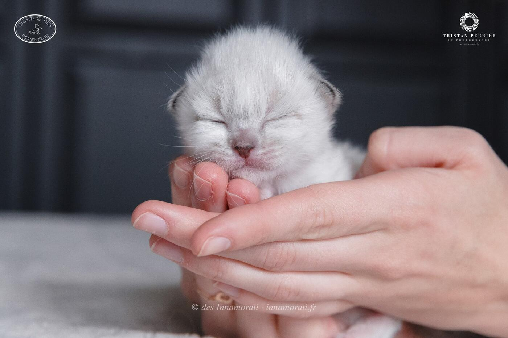
RobeMâle
Naissance5 mars 2018
ParentsMia Bella des Innamorati × Jorel du Castel Walou
StatutAdopté
Album12 photos, de mars 2018 à septembre 2018
Frères et sœursO Bella Ciao des Innamorati, Obiwan Kenobi des Innamorati, Optimus Prime des Innamorati
Demi-frères et sœurspar son père : 2016 avec Blue Treasure's Jazzy

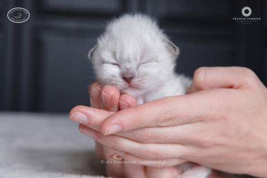

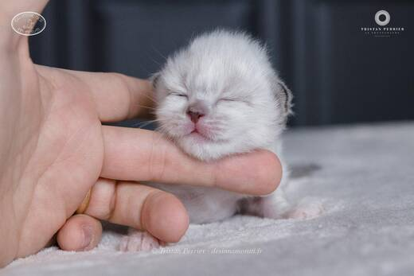

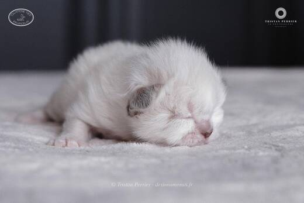

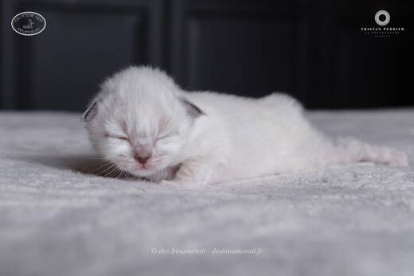

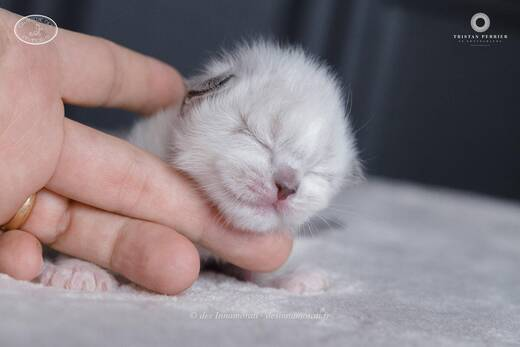

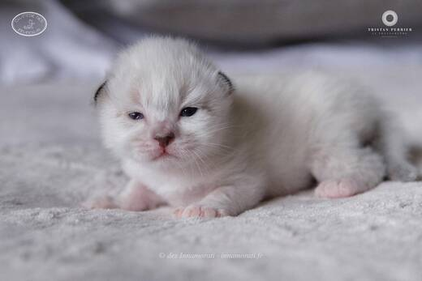

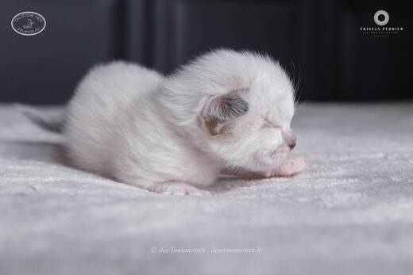

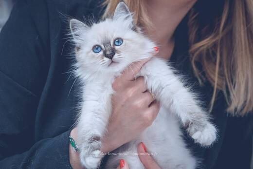

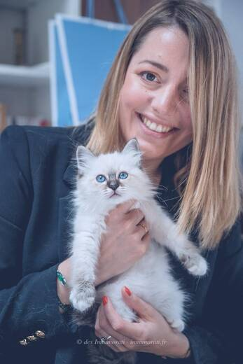

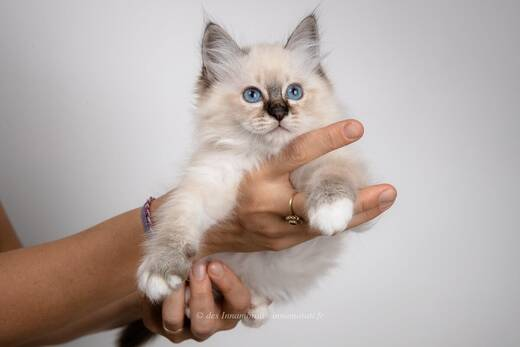

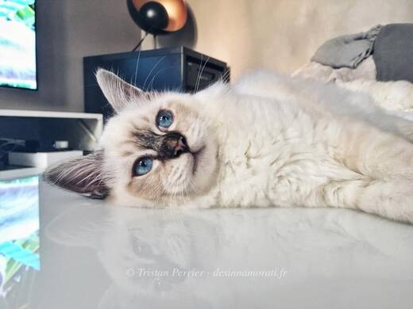

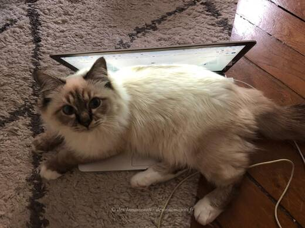
Photos réduites et marquées. Elles appartiennent à la Chatterie des Innamorati et ne peuvent pas être reprises dans une annonce.